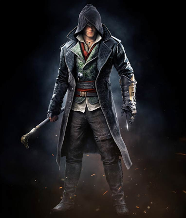

Jacob Frye

Sir Jacob Frye (născut în 1847) a fost un maestru asasin al Frăției britanice de asasini, activ în Londra în epoca victoriană și fratele geamăn al lui Evie Frye. Mai târziu a devenit membru al Ordinului Sacrei Jartiere al Reginei Victoria (alături de sora lui) și bunicul Lidiei Frye.
Deși nu era de acord cu vânătoarea lui Evie pentru Piesele din Eden, Jacob și-a ajutat sora în recuperarea unui artefact din expedițiile ocultistului templier Lucy Thorne. El i-a eliminat pe gardieni, în timp ce Evie căuta în cufere. Cu toate acestea, a fost prins și urmărit de Blighters în timp ce se întorcea la Evie, forțând gemenii să fugă pe o trăsură; Jacob a preluat frâiele în timp ce Evie se ocupa deapărare. În cele din urmă, urmăritorii lor s-au apropiat prea mult, forțându-i pe gemeni să abandoneze trăsura și încărcătura acesteia, deși Evie a reușit să țină un jurnal al regretatului Edward Kenway.
La un moment dat după întoarcerea la Londra, Jacob a ajuns să se dueleze cu ucenicul său Jack, care dezvoltase o viziune extremistă asupra misiunii asasinilor și a propriei sale variante deformate ale Crezului. În cele din urmă a pierdut controlul Rooks în fața lui Jack, care intenționa să folosească banda pentru a-și atinge obiectivele. Ca răzbunare, Jacob a trimis câteva dintre femeile sale inițiate după Jack, deghizate în prostituate pentru a-l atrage afară din ascunzătoare. Eforturile sale s-au dovedit a fi în zadar, totuși, Jack eliminând brutal orice opoziție. Aceasta a marcat începutul crimelor de la Whitechapel, cunoscută și sub numele de Toamna Terorii. În noaptea de 30 septembrie 1888, Jacob s-a adresat jurnalistului Arthur Weaversbrook, care publicase scrisorile lui Jack pentru ca publicul să le citească. El a cerut ca Weaversbrook să întrerupă publicarea scrisorilor și l-a reproșat pentru că l-a transformat pe Jack într-o legendă. După conversația sa cu Weaversbrook, Jacob a prins urma lui Jack care se uita în apropiere și s-a repezit la locuințele sale din Whitechapel. La jumătatea drumului, a început o luptă într-un cimitir, unde Jack l-a rănit pe Jacob și a câștigat. Jacob a continuat să fugă și a scăpat cu o trăsură trasă de cai. Acolo, Jacob a fost prins într-o ambuscadă și copleșit în luptă, ducând la răpirea lui și închis într-o celulă de sub azilul Lambeth. Înainte de răpire, Jacob ceruse întoarcerea surorii sale. Onorând cererea, Evie a început să îl caute și să investigheze scenele de crimă ale numeroaselor victime ale lui Jack. Jacob a fost în cele din urmă localizat de sora lui, abia în viață și într-o stare semi-conștientă. După ce l-a ucis pe Jack și pe complicii săi, Evie a mers să-și ajute fratele și, cu ajutorul inspectorului Frederick Abberline, a ascuns identitatea Spintecătorului pentru a preveni potențiala compromitere a Frăției.